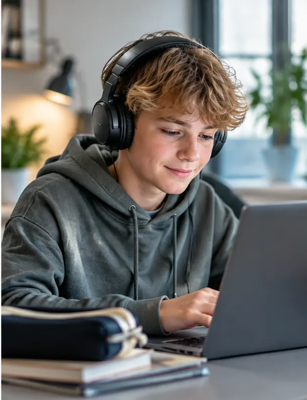

Find det spørgsmål, du kan undersøge
Fra “ordblindhed i skolen” til en afgrænset problemstilling med sammenhæng mellem teori, empiri og metode.
Få styr på dit spørgsmålLær at læse fagtekster kritisk, analysere med belæg, skrive sammenhængende studieopgaver og begrunde dine didaktiske valg. Læseblik er til lærerstuderende, læsevejlederstuderende og studerende på pædagogiske diplomuddannelser.

Her træner du det, der ofte afgør kvaliteten af en studieopgave: et præcist spørgsmål, et kritisk blik på kilderne, analyse med belæg og en konklusion, der faktisk følger af undersøgelsen.
Fra “ordblindhed i skolen” til en afgrænset problemstilling med sammenhæng mellem teori, empiri og metode.
Få styr på dit spørgsmålUndersøg formål, deltagere, metode og resultater, før du bruger en forskningsartikel til at begrunde din undervisning.
Læs den faglige guideSe forskellen på referat og analyse. Lær at bygge en argumentation op uden at love mere, end dine data viser.
Arbejd med din opgaveGå fra en løs fortolkning til en præcis analyse med tekstbelæg, nuancer og didaktisk perspektiv.
Se et gennemarbejdet eksempelBrug guiderne alene, sammen med din studiegruppe eller som forberedelse til vejledning.
En elev læser langsomt i en fagtekst, men følger godt med, når teksten læses højt. Hvad ved du faktisk? Hvilke andre forklaringer bør undersøges? Og hvordan skriver du det præcist i en studieopgave?
Prøv en kort interaktiv analyse med faglig feedback. Her lærer du arbejdsformen, ikke kun teorien.
Iagttagelse: Eleven stopper ved flere længere ord.
Mulig forklaring: Ordafkodningen kan være en barriere, men andre forhold kan spille ind.
Didaktisk valg: Supplér observationen, undersøg elevens perspektiv, og afprøv relevant støtte med opfølgning.
Casen er fiktiv og kan ikke bruges til at stille en diagnose.
De samme forskningsresultater får forskellig betydning afhængigt af uddannelse, opgave og praksisfelt. Vælg det spor, der passer til dine opgaver lige nu.
Lær at identificere læseudfordringer, analysere en undervisningssituation og begrunde dine didaktiske valg med faglige kilder.
Gå til lærersporetFortolk test og observationer med omtanke, planlæg kollegial vejledning og evaluer indsatser i skolens hverdag.
Gå til vejledersporetArbejd metodisk med problemformulering, teori og empiri. Diskutér din undersøgelses begrænsninger og betydning for praksis.
Gå til diplomsporetEt godt fagligt valg kræver, at du kan skelne mellem det, du har observeret, og det, du endnu kun antager. Først derefter giver det mening at vælge en indsats.
Find en faglig guideHvad står der faktisk i teksten? Hvilke ord, resultater og antagelser bærer konklusionen?
Er data relevante, og hvilke andre forklaringer må du overveje?
Hvad vil du afprøve i undervisningen, og hvordan kan du undersøge, om det hjælper?
Tidlige tegn, observation, test og de spørgsmål, du bør stille, før du konkluderer.
Tidlige tegnFør, under og efter læsning. læse- og skriveteknologi (LST), begrebsarbejde og deltagelse i dansk og andre fag.
Inkluderende undervisningKollegial sparring, co-teaching, elevperspektiver, prøvehandling og opfølgning.
Læsevejlederens rolleDu får korte lektioner med browseroplæsning, en konkret problemstilling og en refleksion, der kan bruges på studiet eller i praktikken.
Otte fokuserede episoder om elevobservation, testforståelse, LST, inkluderende undervisning, samarbejde og kollegavejledning.
Åbn lydforløbetLæseblik rummer aktiviteter til afkodning, stavning, læseforståelse og LST. Nu ledsages de af spørgsmål til observation og didaktisk anvendelse, så de også kan bruges som studiemateriale.

Læseblik er udviklet af Mette Sølvbjerg Fuhlendorff, som arbejder med læsning, tekstanalyse, faglig vejledning og udvikling af undervisning. Hendes erfaring fra folkeskolen er grundlaget for øvelser og guides, hvor studerende skal undersøge, argumentere og træffe velbegrundede valg.
Mød Mette